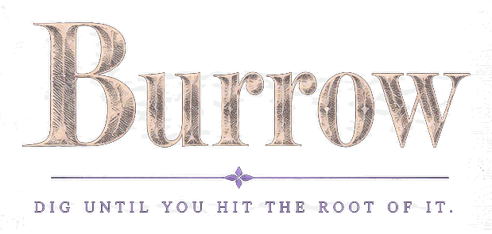

Burrow

A research assistant that keeps your notes, documents and diagrams on the machine it runs on.
Fifteen tools
It writes blocks, connects them, and flags what it is unsure of.
One board
Notes, tables, diagrams, ink. Undo is shared.
It wakes to its name
Say “Hey Burrow”. The microphone stayed closed until you asked it.
It reads
what you
give it
PDF, Word,
Markdown,
plain text.
Dig until you hit the root of it.